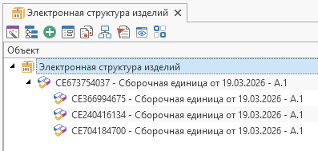

Работа с иерархией |
В данном примере рассмотрена процедура подключения объекта к родителю в справочнике со сложной иерархией.
Ниже показано, как использовать метод
CreateChildLink
класса
ReferenceObject
для создания подключения к дочернему объекту.
C#
using System; using System.Collections.Generic; using TFlex.DOCs.Model.Desktop; using TFlex.DOCs.Model.Macros; using TFlex.DOCs.Model.References; using TFlex.DOCs.Model.References.Nomenclature; public class Macro(MacroContext context) : MacroProvider(context) { public override void Run() { var nomenclatureReference = new NomenclatureReference(Context.Connection); // Справочник "Электронная структура изделий" ReferenceObject parentObject = CreateNewNomenclatureObject(nomenclatureReference); // Создаем родительский объект if (parentObject is null) return; int childObjectsCount = 3; List<ReferenceObject> newObjects = new List<ReferenceObject>(childObjectsCount + 1) { parentObject }; // Создаем дочерние объекты for (int i = 1; i <= childObjectsCount; i++) { ReferenceObject newChild = CreateNewNomenclatureObject(nomenclatureReference); // Создаем дочерний объект if (newChild is null) continue; newObjects.Add(newChild); // Создаем подключение от родительского объекта к дочернему NomenclatureHierarchyLink hLink = parentObject.CreateChildLink(newChild) as NomenclatureHierarchyLink; if (hLink is null) continue; hLink.Amount.Value = i; // Устанавливаем параметры подключения (Количество) hLink.EndChanges(); // Фиксируем изменения } Desktop.CheckIn(newObjects, "Применение изменений", false); // Применяем изменения } /// <summary>Создает объект "Сборочная единица" в справочнике ЭСИ</summary> /// <returns>Созданный объект ЭСИ</returns> public ReferenceObject CreateNewNomenclatureObject(NomenclatureReference nomenclatureReference) { if (nomenclatureReference is null) return null; // Создаем новый объект "Сборочная единица" var classAssembly = nomenclatureReference.Classes.Assembly; // Получаем тип "Сборочная единица" NomenclatureObject newNomenclature = nomenclatureReference.CreateReferenceObject(classAssembly) as NomenclatureObject; // Устанавливаем параметры объекта newNomenclature.Name.Value = "Сборочная единица от " + DateTime.Now.ToShortDateString(); newNomenclature.Denotation.Value = "СЕ" + new Random().Next(); _ = newNomenclature.EndChanges(); // Фиксируем изменения return newNomenclature; } }
Результат работы макроса:

| Внимание |
|---|
|
Данный пример работает на устаревшем механизме, основанном на взаимодействии справочника ЭСИ со связанными справочниками (Документы, Материалы, Электронные компоненты и т.д.) |
C#
using System; using TFlex.DOCs.Model.Macros; using TFlex.DOCs.Model.References; using TFlex.DOCs.Model.References.Documents; using TFlex.DOCs.Model.References.Nomenclature; public class Macro : MacroProvider { private readonly DocumentReference _documentReference; // Справочник Документы private readonly NomenclatureReference _nomenclatureReference; // Справочник "Электронная структура изделий" public Macro(MacroContext context) : base(context) { _documentReference = new DocumentReference(Context.Connection); _nomenclatureReference = new NomenclatureReference(Context.Connection); } public override void Run() { ReferenceObject parentObject = CreateNewNomenclatureObject(); // Создаем родительский объект if (parentObject is null) return; for (int i = 1; i < 5; i++) { ReferenceObject newChild = CreateNewNomenclatureObject(); // Создаем дочерний объект if (newChild is null) continue; NomenclatureHierarchyLink hLink = parentObject.CreateChildLink(newChild) as NomenclatureHierarchyLink; // Создаем подключение к дочернему объекту if (hLink is null) continue; hLink.Amount.Value = i; // Устанавливаем параметры подключения (Количество) hLink.EndChanges(); // Сохраним изменения } } /// <summary> /// Создает объект "Сборочная единица" в справочнике Документы и подключает его к ЭСИ /// </summary> /// <returns>Объект ЭСИ</returns> public ReferenceObject CreateNewNomenclatureObject() { if (_documentReference is null || _nomenclatureReference is null) return null; // Создаем новый объект "Сборочная единица" EngineeringDocumentObject newDocument = _documentReference.CreateReferenceObject(_documentReference.Classes.Assembly) as EngineeringDocumentObject; if (newDocument is null) return null; newDocument.Name = "Сборочная единица от " + DateTime.Now.ToShortDateString(); // Устанавливаем параметры объекта newDocument.Denotation = "СЕ" + new Random().Next(); _ = newDocument.EndChanges(); // Сохраняем изменения NomenclatureObject newNomenclature = _nomenclatureReference.CreateNomenclatureObject(newDocument); // Подключаем к ЭСИ // Если связанный объект ЭСИ (newDocument) сохранен, то и объект ЭСИ, созданный при помощи CreateNomenclatureObject, тоже будет сохранен. // Если к связанному объекту ЭСИ не были применены изменения (EndChanges()), то объект ЭСИ добавляется в набор сохранения объектов вместе со связанным объектом. // В этом случае надо сохранить изменения в наборе: //if (newNomenclature.SaveSet is not null) // newNomenclature.SaveSet.EndChanges(); return newNomenclature; } }